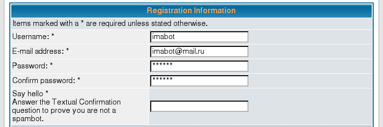
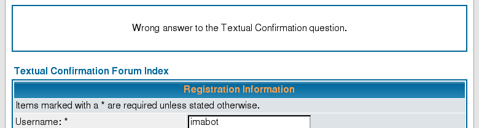
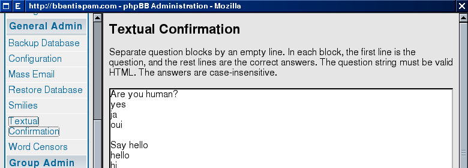

Textual Confirmation (TC) asks newly registering user a question. If the answer is wrong, TC rejects the registration. Also, TC notifies the forum admin and the community spam database.
The administrator can edit the questions and answers in the Administration Panel.
Download now and unpack.
Installation instructions are in the file install.txt.
Installation time is less than 3 minutes or just few clicks with EasyMOD.

The registration page with the Textual Confirmation question

Graceful rejection of registration

Admin interface
Have questions? Ask in the forum.
One of the best antispam solutions is a community-collected ban list. Once put in the list, the spammer can't spam further.
Textual Confirmation helps building the ban list. Each time spam registration is rejected, Textual Confirmation sends a notification to the forum administrator and TO THE COMMUNITY SPAM DATABASE. Example.
Benefit the community, install Textual Confirmation!
Privacy Policy: We do not disclose your individual information to any other company. We collect aggregate statistics on spam texts and spammers' IPs. We may publish or share this aggregate information with other companies. This aggregate data, by its nature, will not reveal your identity.
Buy now! The price is only $29.95.
If you don't want to send us copies of the notifications, you must buy a business license.
Payments are processed by Plimus Corporation, a well-known software store located in the US. The Textual Confirmation author doesn't have access to your sensitive personal data, such as your credit card number. The recommended payment method is credit card. Alternatives might cause additional fees. European users who want to pay by wire transfer (online banking) without fees, please contact us directly.
Bonus: the license key is valid both for Textual Confirmation and Links Rejector.
bbAntiSpam links:
CAPTCHA links:
Please contact via the forum. The address <info bbantispam com> is working, but rarely read.